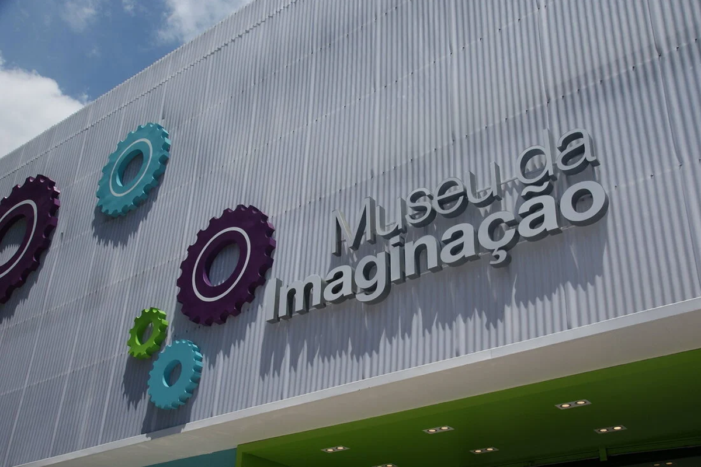
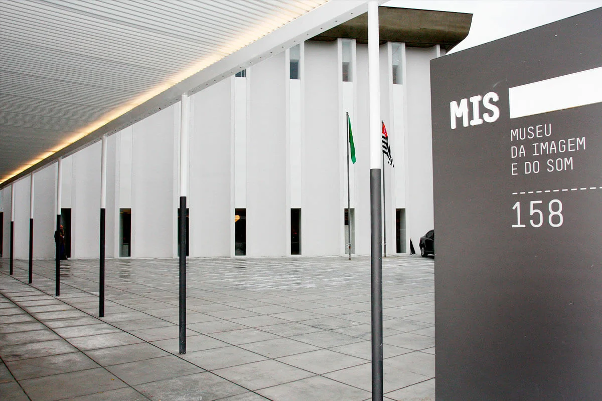

Museus para Crianças
Catavento Cultural

Catavento é um incrível passeio para as crianças e até mesmo para os adultos que gostam de se
divertir enquanto aprendem. A atração está localizada no centro de São Paulo, em um edifício construído em 1924,
que já abrigou a prefeitura da cidade até 2004! O espaço guarda um museu interativo com 4 mil m² divididos em
quatro instalações: Universo, Vida, Engenho e Sociedade. Em cada um dos ambientes, o visitante tem a possibilidade
de interagir com o tema, seja com jogos eletrônicos, filmes em 3D ou exposições.
Onde: Pq. Dom Pedro II, Av. Mercúrio, s/n – Brás
Quando: Terça a domingo, das 9h às 17h
Quanto: R$6,00 (inteira); entrada gratuita aos sábados
Museu do Futebol

O Estádio do Pacaembu abriga sob suas arquibancadas o museu que conta a história do esporte mais amado
pelos brasileiros. Quem visita o local pode conferir curiosidades sobre o futebol, narradores e até treinar um chute
virtual. O espaço tem como objetivo mostrar a importância desse esporte na história do Brasil. É um dos museus mais
tecnológicos e interativos da cidade e opção certa para levar os pequenos, que certamente vão se divertir.
Onde: Praça Charles Miller, s/n - Pacaembu
Quando: Terça a sexta, das 9h às 17h; sábado e domingo, das 10h às 18h
Quanto: R$12,00 (inteira); entrada gratuita às terças
Museu da Imaginação

O Museu da Imaginação nasceu em 2017 como uma iniciativa de duas mães empreendedoras. O espaço oferece
uma proposta diferente de lazer e cultura para crianças, que explora a imaginação através de exposições de arte
interativas e estações de atividades lúdicas. O museu também promove exposições sobre assuntos específicos, como o
“Mergulho com Monet”.
Onde: Rua Ricardo Cavatton, 251 - Lapa
Quando: Terça a sexta, das 10h às 13h e das 14h às 17h; sábado e domingo, das 10h às 17h
Quanto: R$50,00 (a partir de 17 anos); R$80,00 (até 17 anos)
MASP

O Museu de Arte de São Paulo Assis Chateaubriand (MASP). O museu que se consagrou
como cartão postal da nossa cidade, comporta uma coleção considerada a mais importante do Hemisfério Sul. Em seu
acervo estão obras assinadas por artistas como Renoir, Rembrant, Botticelli, Velázquez, Ticiano, Degas e Manet em
exposições permanentes, além das temporárias que são sempre muito interessantes.
Talvez não seja o lugar ideal para levar as crianças muito pequenas, mas não tarde em acompanhar seu filho para uma
visita ao MASP e já plante aquela sementinha artística desde a infância.
Onde: Av. Paulista, 1578 - Bela Vista
Quando: Terça a domingo, 10h às 18h; quinta, das 10h às 20h
Quanto: R$35,00 (adulto); R$17,00 (estudantes, professores e maiores de 60 anos); entrada gratuita às terças
Museu da Imagem e do Som
